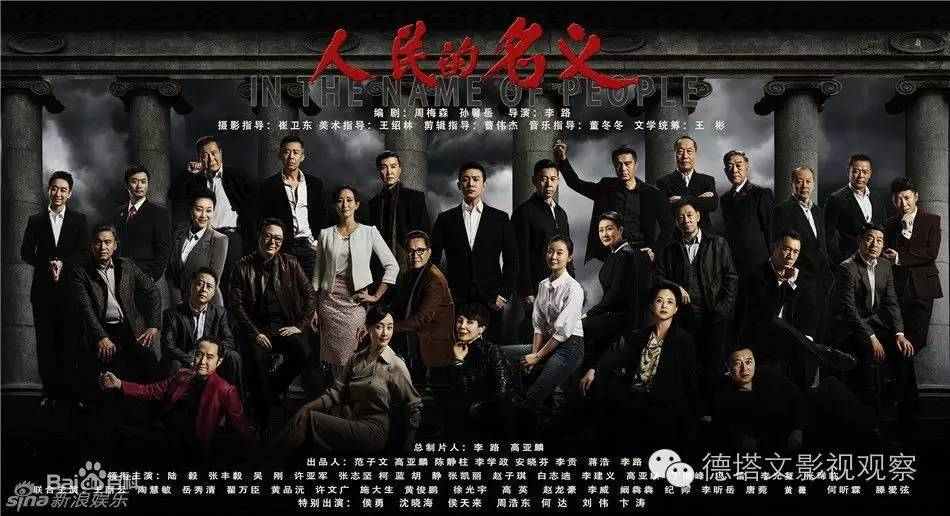

此为临时链接，仅用于文章预览，将在短期内失效
关闭
分析|湖南卫视2017年剧场剧目布局解析
2016-10-19
阿墨
德塔文影视观察
整体格局：
由“4+3”变为“3+4”编排
新加入的730播出的“小戏骨”电视剧系列，此前的试水之作《小戏骨白蛇传》在网络上获得非常不错的口碑和热度。很显然“小戏骨”系列的制作形式和营销模式都是湖南卫视所擅长的，这个题材形式的创新也非常符合当下观众们的口味，且因应了黄金档“老少皆宜”的需求，看好它在综艺扎堆之下成为另一现象及剧集播出形式。
但同时这也可能是一把双刃剑。
2017年古装IP剧存在一定风险，湖南卫视在选择古偶仙侠剧方面相对谨慎，除暂定2018年开年剧目《赢天下》外，2017年有4部古装剧上映。
备受期待的《海上牧云记》将作为2017年的开年剧目。古装IP大剧杨颖、钟汉良的《孤芳不自赏》和可能成为暑期档爆款的赵丽颖、林更新的《特工皇妃楚乔传》成为2017年湖南卫视在古装IP剧大混战中胜出的重要筹码。此外马可的《思美人》可能将作为正剧人物传记在湖南卫视黄金档播出。
市场最关注：《海上牧云记》
湖南卫视在2017年青春偶像剧选择上和它本身青春化定位相符，暑期档剧布局很可能以青春剧为主打。由TFBOYS主演的青春励志成长校园剧《我们的少年时代》和郑爽、陈学冬主演的《夏至未至》未播先热，备受关注。
市场最关注：《我们的少年时代》
除了可以带来强大热度的青少年观众，湖南卫视也用都市爱情剧和职场剧来吸引受教育程度更高、消费力更强的都市白领、职场观众，这也与广告商广告投放需求吻合。
市场最关注：《猎场》
剧名：猎场
